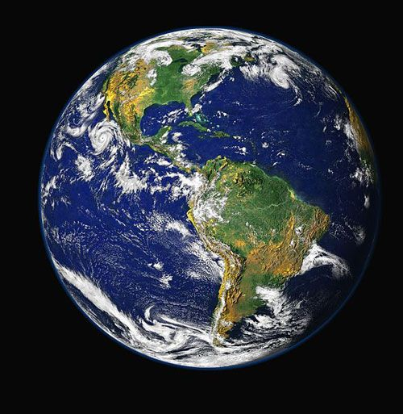

introduction
Earth is the third planet from the Sun and the only astronomical object known to harbor life. This is enabled by Earth being a water world, the only one in the Solar System sustaining liquid surface water.
Earth
Mean radius: 6371.0 km (3958.8 mi)
Surface area: 510072000 km2
Surface gravity: 9.80665 m/s2 (32.1740 ft/s2)[14]
Age
4.543 billion years
Atmosphere
Surface pressure: 101.325 kPa (at sea level)
Composition by volume- 78.08% nitrogen (dry air)
- 20.95% oxygen (dry air)
- ≤1% water vapor (variable)
- 0.9340% argon
- 0.0415% carbon dioxide
- 0.00182% neon
- 0.00052% helium
- 0.00017% methane
- 0.00011% krypton
- 0.00006% hydrogen
Picture of Earth
About1
Almost all of Earth's water is contained in its global ocean, covering 70.8% of Earth's crust. The remaining 29.2% of Earth's crust is land, most of which is located in the form of continental landmasses within one hemisphere, Earth's land hemisphere. Most of Earth's land is somewhat humid and covered by vegetation, while large sheets of ice at Earth's polar deserts retain more water than Earth's groundwater, lakes, rivers and atmospheric water combined. Earth's crust consists of slowly moving tectonic plates, which interact to produce mountain ranges, volcanoes, and earthquakes. Earth has a liquid outer core that generates a magnetosphere capable of deflecting most of the destructive solar winds and cosmic radiation.
about2
Earth has a dynamic atmosphere, which sustains Earth's surface conditions and protects it from most meteoroids and UV-light at entry. It has a composition of primarily nitrogen and oxygen. Water vapor is widely present in the atmosphere, forming clouds that cover most of the planet. The water vapor acts as a greenhouse gas and, together with other greenhouse gases in the atmosphere, particularly carbon dioxide (CO2), creates the conditions for both liquid surface water and water vapor to persist via the capturing of energy from the Sun's light. This process maintains the current average surface temperature of 14.76 °C, at which water is liquid under atmospheric pressure. Differences in the amount of captured energy between geographic regions (as with the equatorial region receiving more sunlight than the polar regions) drive atmospheric and ocean currents, producing a global climate system with different climate regions, and a range of weather phenomena such as precipitation, allowing components such as nitrogen to cycle.
closing
Earth, like most other bodies in the Solar System, formed 4.5 billion years ago from gas in the early Solar System. During the first billion years of Earth's history, the ocean formed and then life developed within it. Life spread globally and has been altering Earth's atmosphere and surface, leading to the Great Oxidation Event two billion years ago. Humans emerged 300,000 years ago in Africa and have spread across every continent on Earth. Humans depend on Earth's biosphere and natural resources for their survival, but have increasingly impacted the planet's environment. Humanity's current impact on Earth's climate and biosphere is unsustainable, threatening the livelihood of humans and many other forms of life, and causing widespread extinctions.